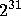

Farmer John has a heap of garbage formed in a rectangular parallelepiped.
It consists of garbage pieces each of which has a value. The value of a piece may be 0, if the piece is neither profitable nor harmful, and may be negative which means that the piece is not just unprofitable, but even harmful (for environment).
The farmer thinks that he has too much harmful garbage, so he wants to decrease the heap size, leaving a rectangular nonempty parallelepiped of smaller size cut of the original heap to maximize the sum of the values of the garbage pieces in it. You have to find the optimal parallelepiped value. (Actually, if any smaller parallelepiped has value less than the original one, the farmer will leave the original parallelepiped).
The first line of the input contains the number of the test cases, which is at most 15. The descriptions of the test cases follow. The first line of a test case description contains three integers A, B, and C (1 ≤ A, B, C ≤ 20). The next lines contain numbers, which are the values of garbage pieces. Each number does not exceed  by absolute value. If we introduce coordinates in the parallelepiped such that the cell in one corner is (1,1,1) and the cell in the opposite corner is (A,B,C), then the values are listed in the order
The test cases are separated by blank lines.
For each test case in the input, output a single integer denoting the maximal value of the new garbage heap. Print a blank line between test cases.
| Input | Output |
1 2 2 2 -1 2 0 -3 -2 -1 1 5 | 6 |